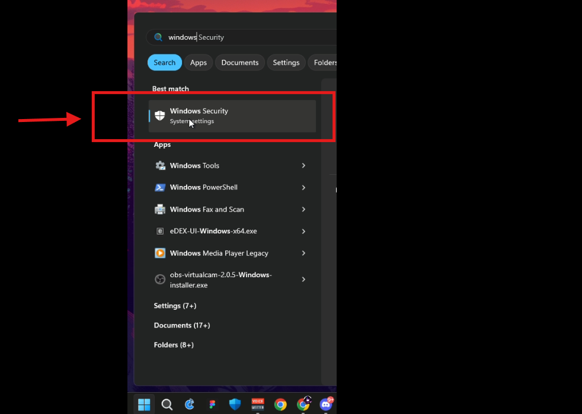
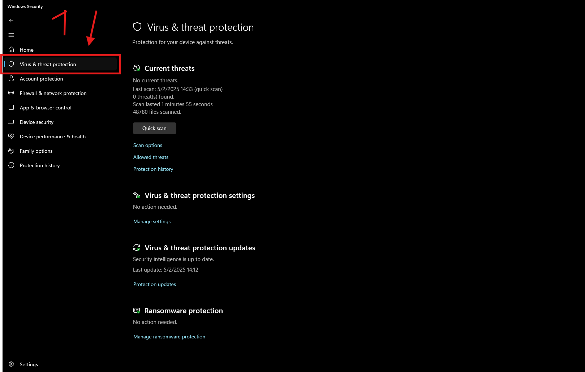
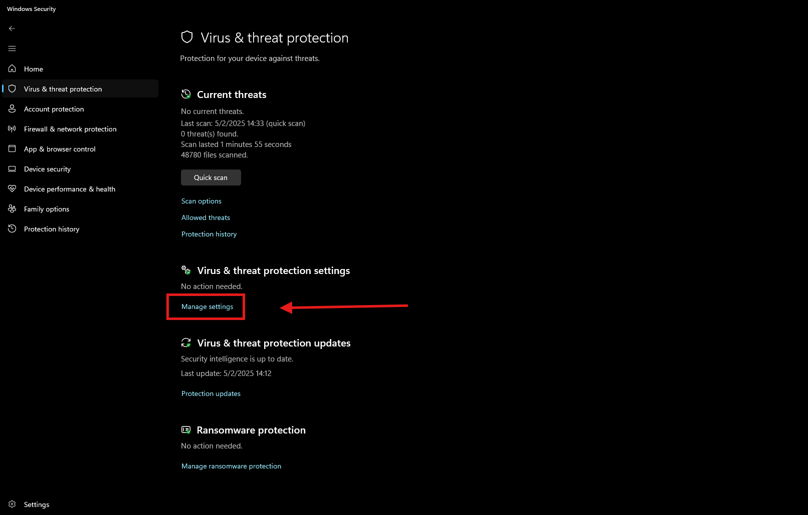
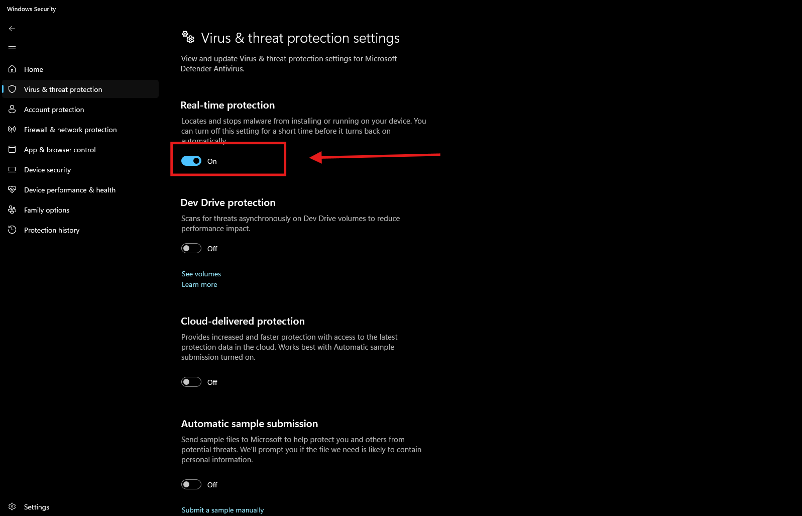
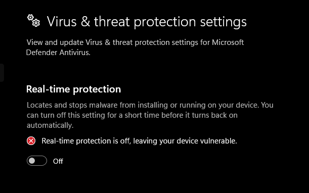
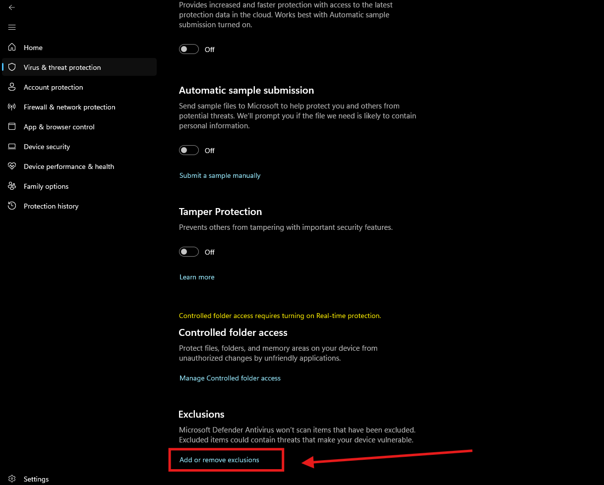
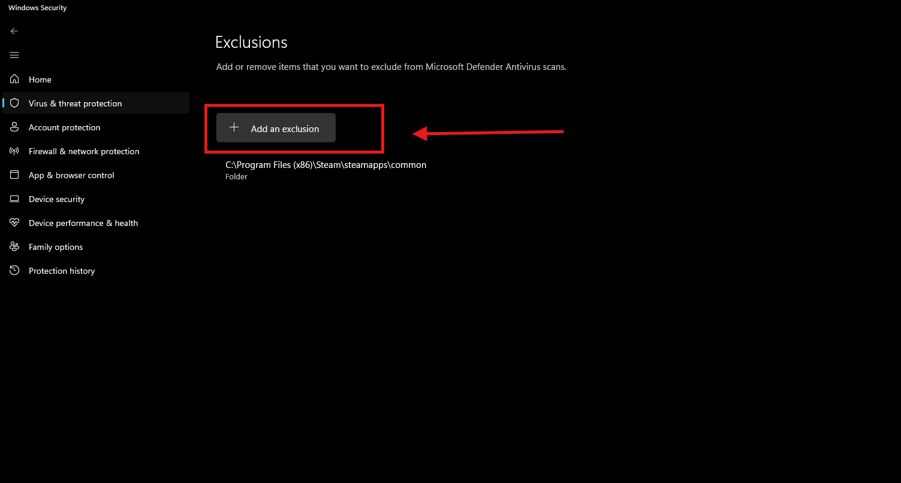
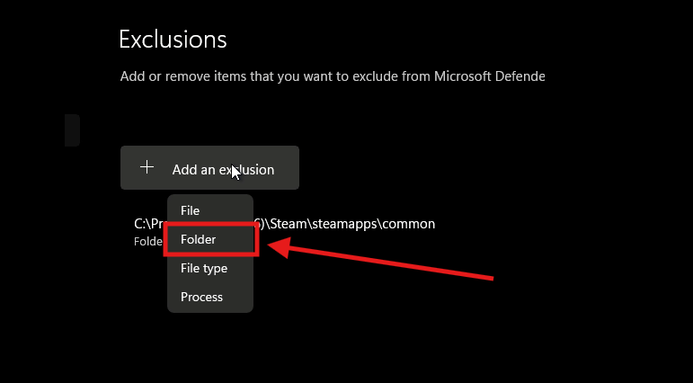
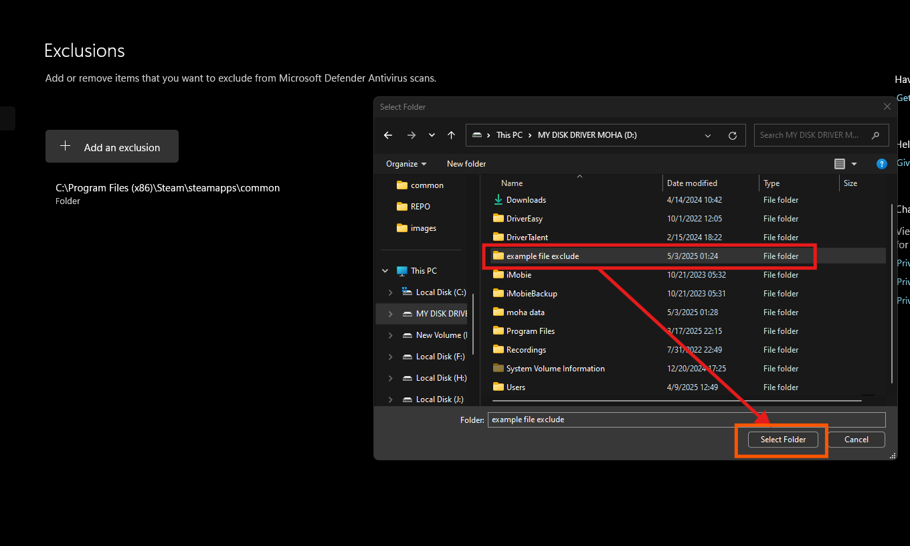

How to Disable Windows Defender & Exclude a Folder
Part 1: Disable Real-Time Protection
Step 1: Open Windows Security
Click on the Start menu and type "Windows Security". Open the app.
Step 2: Click on 'Virus & threat protection'
On the left sidebar, click on Virus & threat protection.
Step 3: Click on 'Manage settings'
Scroll down and click Manage settings under the "Virus & threat protection settings" section.
Step 4: Turn Off Real-time protection
Switch the toggle under Real-time protection to Off.
 Part 2: Exclude a Folder
Step 1: Scroll to 'Exclusions'
From the same page, scroll down to the Exclusions section and click Add or remove exclusions.
Step 2: Add a Folder
Click Add an exclusion and select Folder.
 Step 3: Select Your Folder
Browse and select the folder you want to exclude, then click Select Folder.

Note: Disabling real-time protection or excluding folders can expose your computer to threats. Only do this for trusted files or during specific troubleshooting.